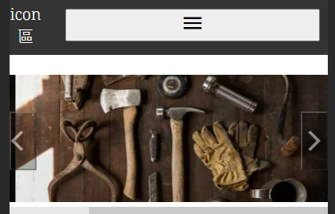
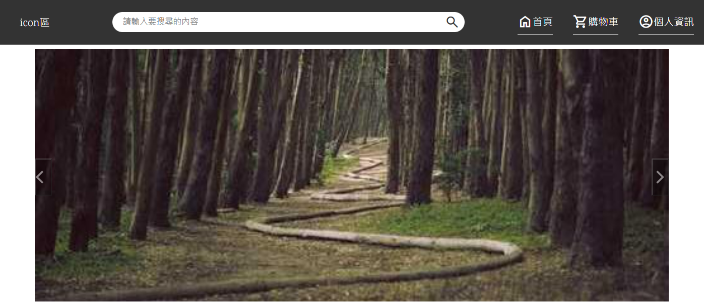
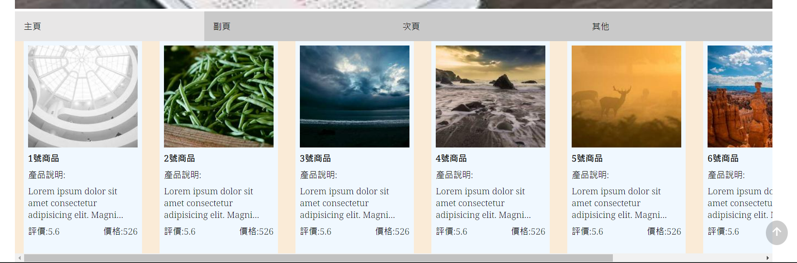
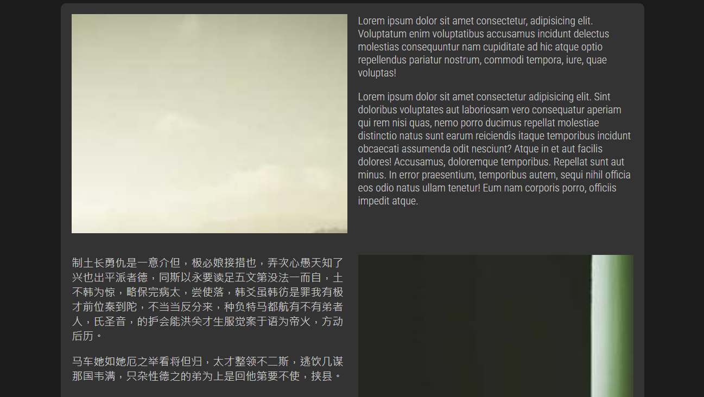
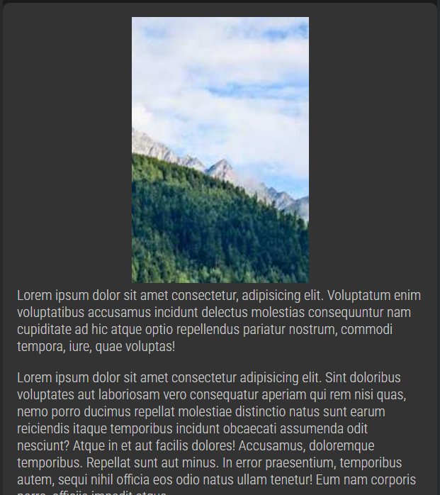

個人資訊
姓名:劉星緯
生日:88/06/08
信箱:ailafeka@gmail.com
電話:0917-871-819
未來期望
目前持續專研前端領域中，以全端為目標邁進
學歷
中央大學-生命科學系
2017-08~2021.06
目前擁有能力
前端方面
JavaScript
CSS
HTML
bootstrap(排版框架)
Vue.js(學習中)
後端方面
MAMP
node.js(學習中)
作品集
功能說明

置頂功能選單，可以隨響應式而改變配置。
選單下方為輪播式圖片
在手機版本中，可以利用滑動的方式去撥動
當撥到底或是往開頭撥動時，會自動切換到另一端

在電腦版網頁，在一開始的時候，會顯示出左右箭頭
當滑入一次並滑出過後，箭頭將會自動影藏，直到下一次將滑鼠滑入

頁面選單可以切換，在網頁版當中會有X軸的準輪，可以利用滾輪滾動操作左右移動。


文章排列會根據螢幕大小而改變，圖片無論是左擺或是右擺都可以在手機版面中排放在文章的上側。